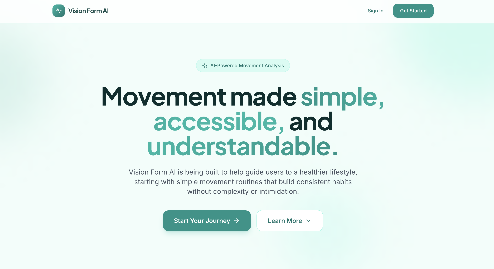
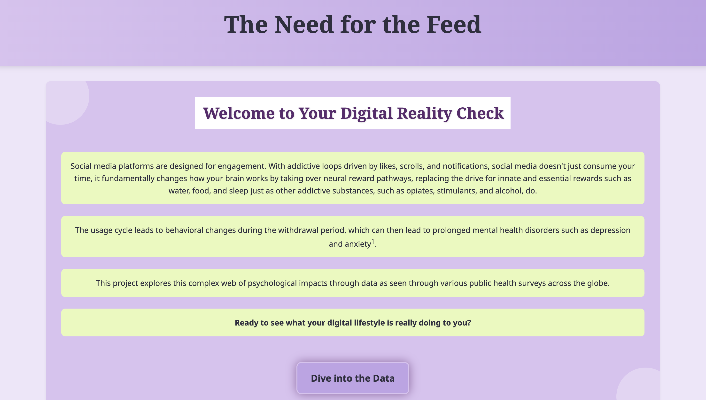

COMPUTER VISION • DATA SCIENCE • FULL-STACK AI
VisionFormAI
An end-to-end AI web application that analyzes movement in real time, delivers personalized feedback, and tracks progress over time.
View Case Study →DATA SCIENCE • AI • ANALYTICS
I build data-driven solutions that turn information into insights and drive meaningful action.
With a background in applied mathematics and data science, my work spans analytics, AI, and automation, using data to identify patterns, improve processes, and inform better decisions.
ABOUT
EDUCATION
UC Berkeley
B.A. Applied Mathematics
Master of Information & Data Science
I'm a data science and AI professional with a background in applied mathematics and a passion for using data and emerging technology to solve meaningful problems.
I enjoy working across analytics, AI and automation to uncover patterns, improve processes, and turn data into information that can support better decisions.
AREAS OF INTEREST
SELECTED WORK

COMPUTER VISION • DATA SCIENCE • FULL-STACK AI
An end-to-end AI web application that analyzes movement in real time, delivers personalized feedback, and tracks progress over time.
View Case Study →
DATA ANALYSIS • DATA VISUALIZATION • INTERACTIVE WEB
An interactive data visualization web application that transforms social media data into an explorable story of online behavior and its impact.
View Case Study →EXPERIENCE
Contra Costa County
Security & Innovation · Department of Information Technology
JAN 2026 — PRESENT
Building data, AI, and automation solutions across County operations, with a focus on practical implementation, responsible AI, and measurable process improvement.
16+ Departments
Automated monthly vulnerability data reporting, reducing a week-long manual process to minutes.
80% Reduction
Supported development and UAT of an AI-powered Animal Services system that reduced weekly case-review meetings from 5 hours to 1 hour.
AI Agent for Analysis
Developed Microsoft Copilot Studio agents to analyze 500+ page County documents, reducing a month-long review process to about one week.
Sentiment Analysis for AI Adoption
Built a local NLP pipeline using Python and Ollama to analyze employee survey responses and surface insights that informed Countywide AI adoption strategy.
Enterprise AI Governance
Helping lead the County's AI agent strategy, including approaches for identity and access management, human oversight, security controls, and lifecycle governance.
AI Literacy & Adoption
Lead recurring Copilot Office Hours and AI literacy training to help nontechnical staff use County-approved AI tools effectively and responsibly.
PREVIOUS EXPERIENCE
UC Berkeley Student Learning Center · EQ Tutors
Differential, Integral & Multivariable Calculus
UC Berkeley · CS 88
Python · SQL · Computational Thinking · Data Science
Target
Operations Analytics · Process Improvement · Data Visualization
LET'S CONNECT
I'm always open to connecting about opportunities in data science, AI, analytics, and emerging technology.